visión por computador · sjk002 · parcial
El parcial, resuelto
Lunes 19-oct-2026 · 15:00–16:30 · aula TD1202AA
Lecciones 0–4 y labs 0–4.
Los 5 ejercicios del ejemplo, la pregunta V/F y 5 ejercicios de práctica, con el código ejecutado.
formato
Cómo es el examen
Escrito, 1,5 h. Sin ordenador: escribes funciones Python/NumPy/SciPy a mano.
Funciones cortas: entre 2 y 6 líneas, sin bucles si se puede.
Verdadero/falso con justificación: «The convolution theorem offers the possibility of speeding up image filtering».
Justificar: el 5b pide una «brief explanation» del procedimiento.
| Se valora | Cómo conseguirlo |
|---|---|
| Vectorizar | operaciones sobre toda la matriz |
| Función adecuada | convolve, gaussian_filter, medfilt2d… |
| Justificar | nombrar la teoría que lo respalda |
| Tipo y forma | float, bool, canales |
cualquier ejercicio de código
Método en 4 pasos
1Operación de teoría. ¿Puntual, vecindad lineal, vecindad no lineal, frecuencia o bordes?
2Función. Elige la de biblioteca (árbol de la diapositiva siguiente).
3Tipo y forma. ¿float o uint8? ¿máscara booleana? ¿1 canal o 3?
4No modificar la entrada. Trabaja sobre una copia y devuelve el resultado.
def f(im, ...):
im = im.astype(float) # paso 3
# paso 1 y 2: operación + función
out = convolve(im, mask)
return out # paso 4: im intacta
árbol de decisión
¿Qué función llamo?
a*im**g, np.where, LUT T[im], np.clipconvolve(im, mask) · gaussian_filter(im, sigma)convolve(·, np.ones((sX,sY)))medfilt2d · median_filter · minimum_filter · maximum_filternp.fft.fft2 + máscara + ifft2sobel, feature.canny · hough_linea*im1 + (1-a)*im2bloque b · del enunciado al código
Diccionario
Frases fijas que delatan la operación de teoría, y los imports de siempre.
enunciado → teoría → función
Palabras del enunciado
| El enunciado dice… | Teoría | Función |
|---|---|---|
| «in the spatial domain the filter with mask» | convolución (T2) | convolve |
| «window of size … around (i, j)» | vecindad | convolve con unos |
| «at least minCount pixels» | suma ≥ umbral | … >= minCount |
| «blurred with a Gaussian of std sigma» | paso bajo (T2) | gaussian_filter(im, sigma) |
| «gamma correction a·I^γ» | potencia (T1) | a*im**gamma |
| «salt and pepper / impulse / probability p» | ruido impulsivo | rand(m,n) < p + mediana |
| «frequency / Fourier / convolution theorem» | T3 | np.fft |
| «edges / gradient» | T4 | sobel · canny |
| «lines» | Hough (T5, lab 4) | hough_line |
si el enunciado no los da
Imports de siempre
import numpy as np
from scipy.ndimage import convolve, gaussian_filter
from scipy.signal import medfilt2d
from PIL import Image
im = np.array(Image.open('building.ppm')) / 255.0
scipy.signal.convolve2d usa mode='full' por defecto y devuelve una imagen más grande. scipy.ndimage.convolve conserva el tamaño (mode='reflect').ejercicio 1 · filtrado espacial
filterIm
Una máscara 3×3: qué detecta, por qué conv = corr y la trampa del uint8.
ejercicio 1 · filtrado espacial
filterIm
«Write filterIm(im) to apply in the spatial domain the filter with mask…» y devuelve la imagen filtrada.
def filterIm(im):
mask = np.array([[-1,-1, 2],
[-1, 2,-1],
[ 2,-1,-1]])
return convolve(im, mask)
convolve. Dos líneas: máscara y llamada.ejercicio 1 · teoría
Qué hace la máscara
(a) Detector de líneas a +45° (T4). Los 2 están en la diagonal «/».
Suma 0 ⇒ en una zona plana la respuesta es 0: no detecta el nivel de gris, solo el cambio.
(b) Simetría central: girada 180° queda igual ⇒ convolve y correlate dan lo mismo (T2).
h
h girada 180°
ejercicio 1 · ejemplo inventado
Línea diagonal 5×5
Imagen de ejemplo (inventada). La respuesta máxima, 6, cae sobre la línea; en los extremos vale 4 (relleno con ceros) y fuera de ella es negativa.
ejercicio 1 · trampa
Trampa del dtype
im = np.zeros((5, 5), np.uint8) for i in range(5): im[i, 4-i] = 9 convolve(im, mask)[2] # uint8 convolve(im.astype(float), mask)[2] # float
uint8 → [247 238 54 238 247] float → [ -9 -18 54 -18 -9] 247 = 256 − 9 · 238 = 256 − 18
im en uint8, convolve devuelve uint8: los negativos no se pierden, dan la vuelta (módulo 256) y parecen valores altos.convolve(im.astype(float), mask)ejercicio 1 · boat256, resultado real
uint8 frente a float
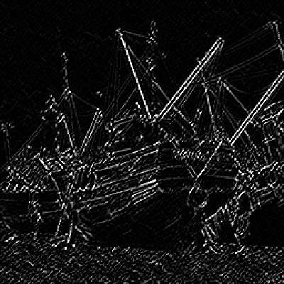
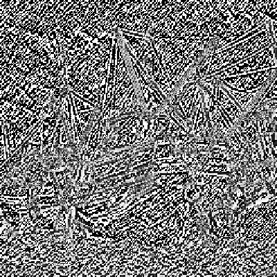
En float, el 47 % de los píxeles da respuesta negativa. En uint8 esos valores se convierten en 256 − |v|: el 42 % de la imagen supera 200 y las líneas quedan enterradas en ruido.
ejercicio 2 · puntual + vecindad
countIm
Contar píxeles en una ventana = umbral + convolución con unos.
ejercicio 2 · puntual + vecindad
countIm
Devuelve una matriz del tamaño de im que indica, para cada (i, j), si hay al menos minCount píxeles en una ventana sX×sY alrededor de (i, j) con nivel de gris menor que thr.
1Puntual: umbral. \( b(i,j)=1[\,f(i,j)<thr\,] \)
2Vecindad: suma de la ventana. Es lineal con pesos 1 ⇒ convolución con unos.
3Puntual: comparar el conteo con minCount.
ejercicio 2 · solución
Por qué funciona
def countIm(im, thr, sX, sY, minCount):
im_th = (im < thr).astype(float)
return convolve(im_th, np.ones((sX, sY))) >= minCount
Los pesos son 1, así que cada píxel de la ventana suma su valor: 0 si no cumple, 1 si cumple. La suma cuenta.
sX*sY (uniform_filter); «media local» ⇒ lo mismo con la imagen sin umbral.ejercicio 2 · ejemplo inventado
Conteo con unos 3×3
Matriz binaria inventada (1 = im < thr). Cada salida es la suma de su ventana 3×3, es decir, el número de unos.
ejercicio 2 · ejemplo inventado
Conteo ≥ minCount
c = convolve(b, np.ones((3,3)))
c >= 4 (1 = True)
ejercicio 2 · cat256, thr = 60, ventana 9×9, minCount = 30
Resultado real
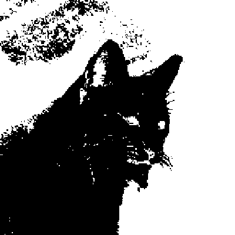
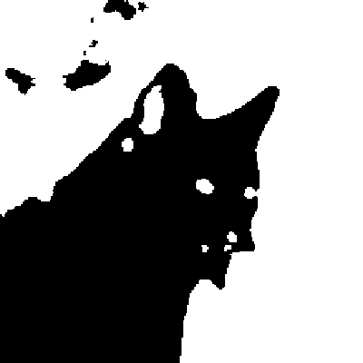
El conteo elimina los píxeles oscuros aislados (bigotes, textura) y deja solo las zonas donde la oscuridad es mayoritaria.
ejercicio 2 · detalles
Filas, bordes y bucles
¿sX son filas o columnas? np.ones((sX, sY)) tiene sX filas y sY columnas.
Bordes: mode='reflect' (por defecto) cuenta píxeles reflejados; mode='constant' trata el exterior como 0.
thr=60 y minCount=4, los dos modos difieren en 19 de 65 536 píxeles, todos en el borde.def countIm(im, thr, sX, sY, minCount):
out = np.zeros(im.shape, bool)
for i in range(im.shape[0]):
for j in range(im.shape[1]):
w = im[max(0,i-sX//2):i+sX//2+1,
max(0,j-sY//2):j+sY//2+1]
out[i,j] = (w < thr).sum() >= minCount
return out
ejercicio 3 · mezcla por máscara
blurFgBk
Emborronar objeto o fondo con una combinación convexa por píxel.
ejercicio 3 · mezcla por máscara
blurFgBk
Dada im y fgMask (True = objeto, False = fondo), devuelve una imagen con el objeto emborronado (si bFg es True) o el fondo (si no), con un gaussiano de desviación sigma.

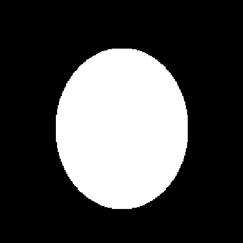
ejercicio 3 · combinación convexa
Combinación convexa
def blurFgBk(im, fgMask, bFg, sigma):
im_f = gaussian_filter(im, sigma)
if bFg:
a, b = 1 - fgMask, fgMask
else:
a, b = fgMask, 1 - fgMask
return a*im + b*im_f
def blurFgBk(im, fgMask, bFg, sigma):
im_f = gaussian_filter(im, sigma)
return np.where(fgMask == bFg, im_f, im)
Por píxel, \(a,b\in\{0,1\}\): se elige im o im_f. Con bFg=True, \(b=\)máscara: el objeto sale borroso.
np.allclose) para bFg=True y False.ejercicio 3 · trampas
Trampas de blurFgBk
1 - fgMask funciona (bool pasa a int), pero fgMask - fgMask da TypeError. Con booleanos, ~fgMask es más claro.a es (m,n) e im es (m,n,3), y falla con ValueError (operands could not be broadcast).gaussian_filter(im, sigma) en color también desenfoca entre canales (diferencia máxima 0,44 en peppers).def blurFgBk(im, fgMask, bFg, sigma):
im_f = gaussian_filter(im, (sigma, sigma, 0))
sel = (fgMask == bFg)[..., None]
return np.where(sel, im_f, im)
ejercicio 4 · realce puntual
Gamma y rgb2gray
Dos formas idénticas de convertir a gris, y una errata en el coeficiente G.
ejercicio 4 · realce puntual (T1)
Corrección gamma
Con \(\gamma = 1/2.2\) y \(r\in[0,1]\): \(0{,}5\mapsto 0{,}73\), \(0{,}25\mapsto 0{,}53\). Aclara.
\(\gamma>1\) oscurece. Solo vale en [0, 1]: si la imagen está en [0, 255], primero divide entre 255.
ejercicio 4 · solución
gamma y rgb2gray
def gamma_correction(im, a, gamma):
return a * im**gamma
def rgb2gray(im_rgb):
coeffs = np.array([0.2126, 0.7512, 0.0722])
gamma = 1 / 2.2
# opción 1: corregir y luego ponderar
im_g = gamma_correction(im_rgb, 1, gamma)
return (coeffs[0]*im_g[:,:,0]
+ coeffs[1]*im_g[:,:,1]
+ coeffs[2]*im_g[:,:,2])
# opción 2: el peso va en el parámetro a
R, G, B = (im_rgb[:,:,k] for k in range(3))
return (gamma_correction(R, coeffs[0], gamma)
+ gamma_correction(G, coeffs[1], gamma)
+ gamma_correction(B, coeffs[2], gamma))
ejercicio 4 · «which one do you prefer?»
¿Cuál prefieres?
sum(gamma_correction(im[:,:,k], c[k], g)
for k in range(im.shape[2]))
im @ coeffs # sobre im**gamma, N bandas
Para imágenes multiespectrales (decenas de bandas) se generaliza con un bucle o con np.tensordot.
ejercicio 4 · errata detectada
Errata: coeficiente G
| R | G | B | suma | |
|---|---|---|---|---|
| enunciado | 0,2126 | 0,7512 | 0,0722 | 1,036 |
| BT.709 | 0,2126 | 0,7152 | 0,0722 | 1,000 |
Con 0,7512, un píxel blanco (1, 1, 1) da 1,036: el blanco se pasa de 1 y puede saturar.
ejercicio 5 ★ el difícil
Ruido TLA
Añadir ruido de color con indexación booleana y quitarlo con la mediana.
ejercicio 5 ★ el difícil
Ruido TLA
«Tomate, lechuga, berenjena»: un sensor que afecta a cada píxel con probabilidad p. Cada tipo ocurre con probabilidad p/3; el resto de píxeles conserva su valor.
(a) add_TLA_noise(im, p), a ser posible sin flatten, ravel ni reshape.
(b) remove_TLA_noise(im_noisy) y una breve explicación que justifique el procedimiento.
| tipo | nombre | RGB | prob. |
|---|---|---|---|
| T | tomate | [1, 0, 0] | p/3 |
| L | lechuga | [0, 1, 0] | p/3 |
| A | berenjena | [½, 0, ½] | p/3 |
| sin ruido | valor original | 1 − p |
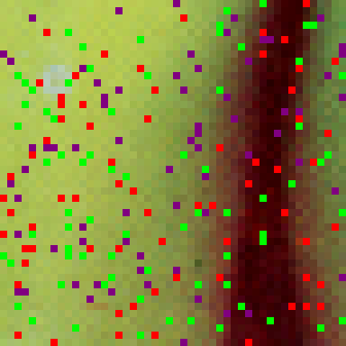
ejercicio 5a · solución explicada
5a línea a línea
def add_TLA_noise(im, p=0.1):
im = im.copy()
t, l, a = 1, 2, 3
pattern = {t:[1,0,0], l:[0,1,0], a:[0.5,0,0.5]}
m, n, k = im.shape
where = np.random.rand(m, n) < p
which = np.random.randint(t, a+1, (m, n))
which_where = which * where
for nt in [t, l, a]:
im[which_where == nt, :] = pattern[nt]
return im
| where | (m,n) bool: píxel afectado, con probabilidad p |
| which | (m,n) en {1,2,3}: tipo, uniforme ⇒ p/3 cada uno |
| which*where | 0 si no afectado; si no, su tipo |
| im[mask,:] | máscara 2D elige filas (N,3); el vector RGB se propaga |
ejercicio 5a · trampas verificadas
Trampas de 5a
im en el sitio y devuelve el mismo objeto. Se comprobó: la imagen original cambia. Añade im = im.copy().im_tlb, que no existe; es im_tla.randint(1, 4) da 1, 2 o 3: el extremo superior se excluye.peppers, p = 0,1: píxeles cambiados = 0,1007 1000×1000 aleatoria, p = 0,1: T = 0,0336 L = 0,0334 A = 0,0331 p/3 = 0,0333
La proporción afectada ≈ p. Si un píxel ya valía el patrón, no cambia, y por eso sale marginalmente menos.
ejercicio 5b · justificación
5b: la mediana
def remove_TLA_noise(im_noisy):
im = np.copy(im_noisy)
for k in range(im.shape[2]):
im[:, :, k] = medfilt2d(im_noisy[:, :, k])
return im
T y L son, por canal, ruido impulsivo: sal en un canal y pimienta en los otros. La mediana lo elimina.
A (valor ½) no es extremo, pero la mediana quita los valores poco representativos de la vecindad, aunque no sean extremos.
ejercicio 5b · ventanas 3×3 de ejemplo
Mediana canal a canal
R con T: 1 → 0,7
G con T: 0 → 0,3
B con A: 0,5 → 0,1
límite: se queda 0,5
El valor central se sustituye por el 5.º de los 9 ordenados. Un valor poco representativo de la vecindad nunca llega al centro de la lista, sea extremo (0 o 1) o no (½).
ejercicio 5 · peppers.ppm, p = 0,1
Resultado real
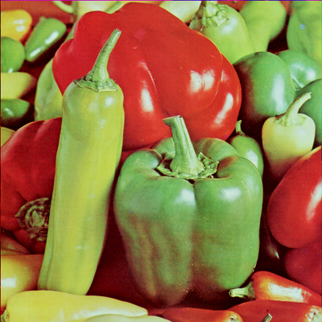
Para comparar: una media 3×3 por canal queda en ≈ 24 dB. La mediana elimina los impulsos; la media los difumina.
bloque h
Verdadero / falso
La pregunta del teorema de la convolución, con sus matices, y 12 más.
pregunta V/F del examen
Teorema de la convolución
«The convolution theorem offers the possibility of speeding up image filtering.»
justificación completa
Matices del coste
Solo con núcleos grandes: hasta m = 6 gana el espacial; desde m = 7, la FFT. Un núcleo separable (2m) no cede hasta m = 18.
Solo filtros lineales e invariantes: la mediana no es lineal.
DFT = convolución circular: hay que rellenar (padding) para igualar la lineal.
una por tema
Otras V/F (1/2)
una por tema
Otras V/F (2/2)
bloque i · ejercicios inventados
Practica tú
Cinco ejercicios con el estilo del examen. Intenta escribirlos antes de revelar la solución.
de práctica · T2 + T4
localMeanDiff
Escribe localMeanDiff(im, n): la diferencia entre la imagen y su media local n×n.
def localMeanDiff(im, n):
box = np.ones((n, n)) / n**2
return im - convolve(im.astype(float), box)
Equivale a im - uniform_filter(im, n). La media de la salida es ≈ 0.
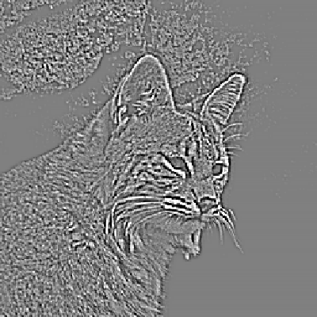
de práctica · T3 / lab 3
lowpassFreq
Escribe lowpassFreq(im, r): paso bajo ideal de radio r en el dominio de la frecuencia.
fft2, fftshift, meshgrid para el círculo, y deshacer en orden inverso.def lowpassFreq(im, r):
m, n = im.shape
F = np.fft.fftshift(np.fft.fft2(im))
y, x = np.meshgrid(np.arange(m) - m//2,
np.arange(n) - n//2, indexing='ij')
H = (x**2 + y**2) <= r**2
return np.fft.ifft2(np.fft.ifftshift(F*H)).real
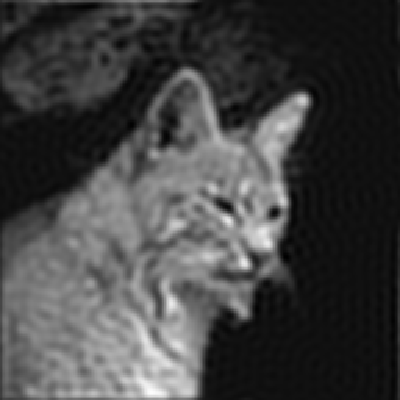
de práctica · T4 / lab 4
edgeMap
Escribe edgeMap(im, sigma, t): suaviza, calcula Sobel en x e y, la magnitud y umbraliza con un umbral relativo t.
def edgeMap(im, sigma, t):
s = gaussian_filter(im.astype(float), sigma)
gx = sobel(s, axis=1)
gy = sobel(s, axis=0)
mag = np.hypot(gx, gy)
return mag > t * mag.max()
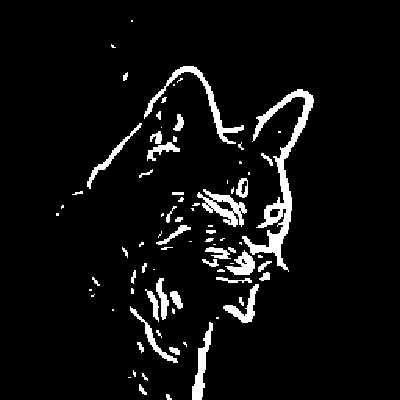
de práctica · T1 / lab 1
histEq con una LUT
Escribe histEq(im) en 3 líneas para una imagen uint8.
def histEq(im):
h = np.bincount(im.ravel(), minlength=256)
T = np.round(255*np.cumsum(h)/im.size).astype(np.uint8)
return T[im]
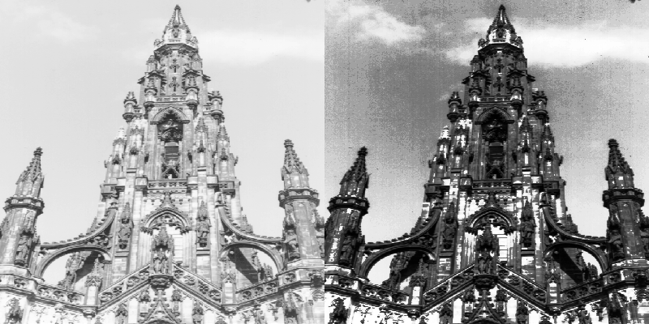
de práctica · T2 + T4
edgeDensity
Escribe edgeDensity(im, sigma, n, frac): marca las posiciones donde, en una ventana n×n, al menos una fracción frac de los píxeles son de borde.
def edgeDensity(im, sigma, n, frac):
ed = feature.canny(im.astype(float), sigma=sigma)
box = np.ones((n, n)) / n**2
return convolve(ed.astype(float), box,
mode='constant') >= frac
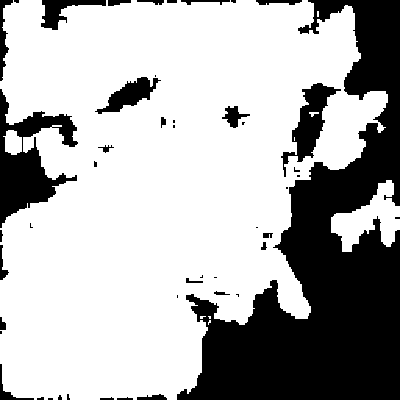
bloque j
Para llevarte
Cómo encajan los temas, la lista de comprobación y la chuleta final.
cómo se conectan
Mapa de los temas
30 segundos por ejercicio
Antes de entregar
im.astype(float) o / 255.0 (ej. 1 y 4).im[...] = …, empieza con im = im.copy() (ej. 5a).im; ndimage.convolve, no convolve2d en modo 'full'.[..., None], sigma=(s, s, 0) o un bucle sobre k (ej. 3 y 5b).randint(a, b) excluye b; np.ones((sX, sY)) son sX filas.15 funciones imprescindibles
Chuleta final
| firma mínima | módulo |
|---|---|
np.where(c, a, b) | numpy |
np.clip(a, lo, hi) | numpy |
a.astype(float) | numpy |
np.bincount(im.ravel(), minlength=256) | numpy |
np.cumsum(h) | numpy |
convolve(im, mask) | scipy.ndimage |
gaussian_filter(im, sigma) | scipy.ndimage |
medfilt2d(im, 3) | scipy.signal |
| firma mínima | módulo |
|---|---|
np.random.rand(m,n) · randint · normal | numpy.random |
fft2 · ifft2 · fftshift · ifftshift | numpy.fft |
np.meshgrid(x, y) | numpy |
sobel(im, axis=0|1) | scipy.ndimage |
np.hypot(gx, gy) · np.arctan2(gy, gx) | numpy |
feature.canny(im, sigma) | skimage |
hough_line(ed) · hough_line_peaks(h, ang, d) | skimage.transform |